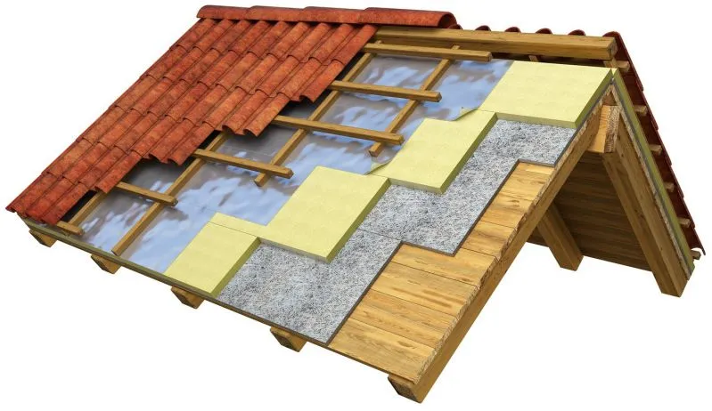
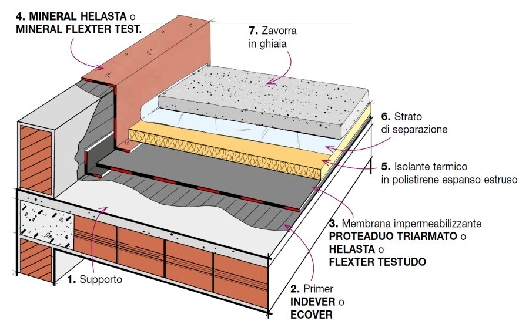
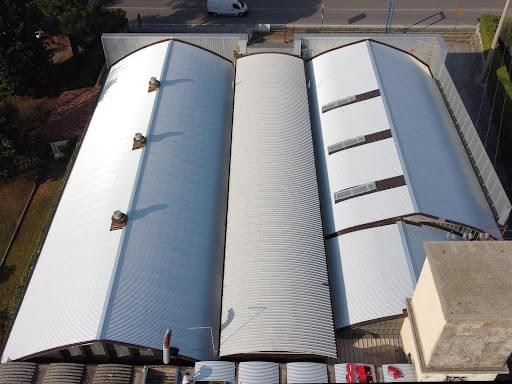
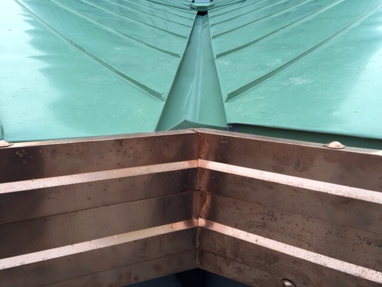

Analisi del punto critico
Valutiamo l’origine dell’infiltrazione e il comportamento della copertura.
Servizi coperture
Realizziamo interventi su coperture civili e industriali, con particolare specializzazione nei sistemi impermeabilizzanti, fondamentali per garantire protezione, tenuta e durata nel tempo.
Ogni intervento viene preceduto da un’analisi tecnica della copertura, per individuare la soluzione più efficace in base alle condizioni reali della struttura.

Rifacimento coperture
Interveniamo su:
Utilizziamo materiali professionali e tecniche aggiornate per garantire una copertura affidabile, sicura e duratura.

Impermeabilizzazione
Siamo specializzati nella realizzazione di sistemi impermeabilizzanti su diverse tipologie di tetto.
Analizziamo la struttura e applichiamo la soluzione più adatta per:
Ogni lavorazione viene eseguita con criteri tecnici precisi e materiali certificati.
Riparazione infiltrazioni
Il nostro approccio non si limita alla riparazione superficiale: analizziamo la causa del problema per intervenire alla radice ed evitare il ripresentarsi della perdita.
Valutiamo l’origine dell’infiltrazione e il comportamento della copertura.
Applichiamo la soluzione corretta in base alla reale causa del problema.
Un intervento corretto evita il ripetersi della perdita nel tempo.
Manutenzione coperture
Offriamo interventi di manutenzione per preservare l’efficienza della copertura nel tempo. Controlli periodici e interventi mirati permettono di prevenire danni più gravi e costosi.
Verifica di manto, raccordi, scarichi e punti sensibili.
Piccoli ripristini per evitare problemi più estesi.
Una manutenzione corretta riduce degrado e costi futuri.
Approccio tecnico
Per questo lavoriamo con un metodo strutturato:
analisi tecnica della copertura
individuazione dei punti critici
scelta del sistema più adatto
esecuzione professionale dell’intervento
Questo approccio consente di ottenere risultati efficaci e duraturi.
Sezione tecnica
Operiamo su diverse tipologie di coperture, applicando soluzioni specifiche in base alla struttura. Ogni intervento viene eseguito con attenzione tecnica per garantire affidabilità e durata nel tempo.

Sistemi impermeabilizzanti per superfici piane.
Interventi su tetti a tegole o coppi.
Soluzioni tecniche contro infiltrazioni.

Lavorazioni su scossaline, raccordi e punti critici.
Progettazione e realizzazione degli strati del tetto.
Valutazione tecnica
Richiedi una valutazione tecnica e un preventivo senza impegno.
Compila il modulo e inviaci una breve descrizione del problema.
Vai al modulo preventivo